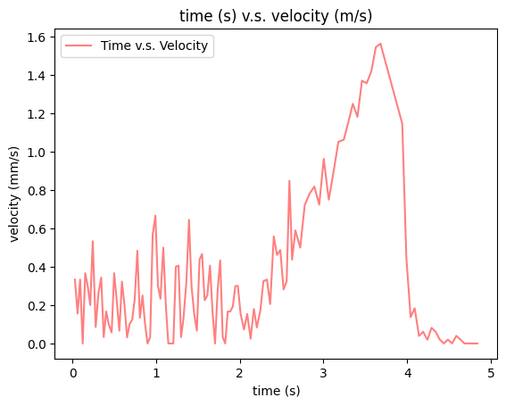
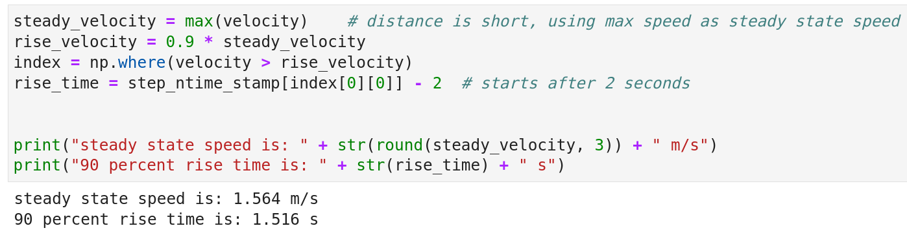
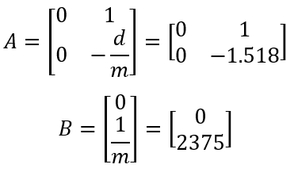
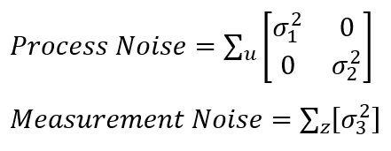
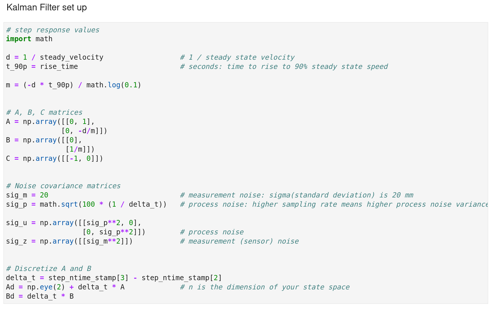

The objective of this lab is to combine what I have done from previous lab to fully implement a stunt on the robot as fast as possible.
Lab Task A: Position Control
Since I have chosen "Position Control" task in lab 7, in this lab, I will implement my stunt when the robot is approaching the wall. Basically the process of the stunt is:
1. Start the robot away from the wall within 4m and hardcode to give its motors a fast enough speed to drive it towards the wall. The reason here to hardcode the PWM values for motors instead of applying PID position control to adjust PWM based on distance error is because the robot needs to go fast enough to do a flip, but PID position control will slow down the speed as the robot approaching the wall.
2. When the distance between robot and the wall is around 0.5m, the robot motors will spin reversely with max PWM values (255) to perform a flip.
3. The robot will then drive back away from the wall in a fast speed.
To ensure the robot motors can spin reversely in time to perform the flip regarding the high running speed while low distance sensor sampling rate, the Kalman filter developed before is used to predict the distance between robot and the wall and hence based on the faster updated distance prediction, the reverse spinning can happen on time to perform the flip.
Starting from the line, the robot is coded to travel forward to the wall at a speed of ...% of PWM duty cycle and as the Kalman filter distance estimation gives a reading of 500 mm, the PWM duty cycle percentage is reversed to 100% to achieve a flip. Then the robot runs forward in the opssite direction with a high speed (...% PWM) for ... seconds and eventually stop after it crosses the starting line. The code snippet of this stunt process is given as below.
It needs to be noticed that .... :Kalman filter When you have new sensor readings, run both the prediction and the update step. When you don’t have new sensor readings, run only the prediction step (i.e. compute your estimated distance based only on the motor inputs and your dynamics model).
The distance data from ToF sensor and Kalman filter prediction when robot is driving towards the wall are shown in plot as below. DESCRIPTION
 Distance Data from Sensor & Kalman filter
Distance Data from Sensor & Kalman filter
The PWM duty cycle percentage during the whole process is plotted as below. DESCRIPTION
 PWM duty-cycle Percentage
PWM duty-cycle Percentage
Video below demonstrates the stunt performed successfully by the robot.
Stunt Performed by Robot
 Drag & Momentum
Drag & Momentum
I get these values using step response, which is to drive the robot towards the wall, recording the data including PWM, distance sensor readings and timestamps during the process, try to get the robot run at a steady state for a while with maximum speed from PID control in lab 6, eventually brake the robot by reverse spinning for a short time to counteract to inertance hence to prevent the robot hits the wall.
I start the step response measurement by placing my robot at around 1600 mm away from the wall and I delay it for 2 seconds before setting the PWM to be 50% duty cycle which is the highest PWM I obtained from my PID control in lab 6. Eventually, the robot will keep moving forward until the distance is less than 200 mm when robot brakes actively. With constant PWM signal, the steady state appears when the robot stops accelerating and run at a constant speed. During the whole process, the data are collected and stored in arrays, and are sent to computer side via bluetooth at the end.
To conclude, the step response measurement process is:
1. 2 seconds of stationary state for robot, with "constant" distance reading of around 1600 mm and PWM duty cycle percentage of 0.
2. Moving forward until ToF reading is less than 200 mm during which the PWM value is 50%.
3. Brake actively and stop for 1 second during which the distance reading is "constant" and PWM value drops back to 0.
The distance measurement is plotted as below, which shows the distance between robot and wall during the whole step response measurement process.
Step Response Distance
Similarly, the PWM duty cycle percentage is shown below.
PWM duty-cycle Percentage
Then, according to the distance measurements and timestamps, the velocity can be computed and plotted as below.
 Velocity
Since the robot starts to move after two seconds, the velocity shown before 2 seconds are actually results from the distance measurement errors when robot is stationary. So we are interested in the velocity after 2 seconds, where the velocity continues increasing and keeps constant for a short period at around 1.6 m/s before the robot stops. By processing the velocity data in python, I can get the steady state velocity to be 1564 mm/s and the 90% rise time to be 1.516s.
 Extract Velocity & 90 percent Rise Time
Therefore, based on the step response data I obtain, I can compute drag and momentum terms based on the fomula before as:
 Drag & Momentum Computation
Drag & Momentum Computation
Now, I have my A and B matrices to be:
 A & B Matrices
Kalman Filter Initialization
After determining A and B matrices by step response measurement, with given C matrix which is C = [-1 0] (meaning that I am interested in the negative distance from the wall by setting the wall state to be 0 and the distance away from the wall is negative value) from lecture, I need to further decide filter parameters including process noise and measurement noise.
To specify process noise and measurement noise, according to the formula from lecture, I need three covariance values, among which two for the process noise and one for the measurement noise:
 Process Noise & Measurement Noise Since the process noise is dependent on ToF sensor sample rate, I find my sampling rate which is
Therefore, I can have my process noise (related to robot position and speed) to be computed based on the equations below, where 0.03 is my sampling rate.
 Process Noise
Process Noise
The measurement noise represents the standard deviation of each ToF sensor's distance measurement in mm. As suggested by Kirstin, it can be set as 20 mm, meaning that for each measurement, there is a likely error of 20 mm. Therefore, I have my measurement noise as:
 Measurement Noise
Measurement Noise
Then, I can discretize my A and B matrices based on my sampling rate and so that implement discretized matrices in the Kalman filter.
Now, the parameters setup for Kalman filter is completed, and I can define my Kalman filter by replacing my computed parameters to the Kalman filter template definition provided by Kirstin. The final Kalman filter code snippet is given as below.
 Kalman Filter Parameters Setup Kalman Filter Definition
Kalman Filter Definition
Kalman Filter Implementation
To test the performance of my Kalman filter, I am going to implement Kalman filter on the PID control data I obtained from lab 6. While before I load the lab 6 data, I need to specify the initial state of Kalman filter, which are:
1. The x matrix containing initial position (first distance reading from PID distance data) and starting velocity (which is 0 since the robot starts from stationary).
2. The sig matrix representing the initial standard deviation for robot position and speed, which are both set to 5.
Eventually, the PWM percentage data and distance sensor readings obtained by PID control from lab 6 are invoked, together with initial state matrices, as input of Kalman filter function.
Kalman Filter ImplementationThe plot below demonstrates the result of Kalman filter state estimation on the data I obtained from lab 6. It shows a good fit with almost no error.
Kalman Filter ResultI also conduct tests on different measurement noise variance while keeping the process noise variance unchanged since it only depends on sampling rate. Following is an example of Kalman filter model with setting high measurement noise variance (sig_m = 100), meaning that now I am less focusing on the distance data obtained by ToF sensor since it has high measurement error. In this case, I would use Kalman filter estimation instead of sensor readings as the real distance between robot and wall.
Kalman Filter Result with High Measurement NoiseKalman Filter on Robot
After verifying the parameters of my Kalman filter using PID data collected from lab 6 in Jupyter side, now it's time to implement on the robot by defining the Kalman filter on Artemis side.
Video below shows the working Kalman filter integrated with PID control on the robot.
Kalman_Filter with PID ControlSimilar to last task, the parameters for Kalman filter need to be defined first, while as I have confirmed that previous parameters are good enough, I am using completely same parameters on Artemis side. Below are the code snippets for parameters initilization and Kalman filter definition.
It needs to be noticed that the initial position state x_val matrix is defined without specifying real distance because the distance sensor has not been initialized when the global variables are defined here. The distance sensor is initialized in void setup() part and the x_val is initialized by the ToF sensor's distance reading when the PID control with Kalman filter is invoked.
The following code snippets demonstrates the PID case function where the PID parameters and some Kalman filter parameters are initialized.
The initial state matrix x_val is set with the negative ToF distance reading to be initial position state and 0 to be initial robot speed. The initial position state is negative because in Kalman filter, the wall is set to be 0 and the distance between robot and wall is negative. Based on the distance, the first PWM duty cycle percentage can be computed and set to pwm_val.
Then, the kalman filter predicted distance (-x_val(0,0) as the kalman filter predicted distance is negative) is considered as the real robot-towards-wall distance and subtract it to 304 mm to get the error repetitively as PID control continues. The code snippets for the PID control loop located in the void loop section is shown as below.
for each loop, the Kalman filter function is called to update the x_val matrix which containing predicted distance and that distance is used to calculate distance error.
Eventually, by applying PI(D) control with P = 0.04 and I = 0.0001:
PI(D) ControlThe PWM dutycyle perentage controlled by PID control and the Kalman filter predicted distances are demonstrated in the plots below.
Kalman Predicted Distances & Sensor Measured Distances PWM Dutycycle PercentagesIt can be seen that basically the Kalman filter predicted distances are quile close to the sensor measured distances. The PID control system hence gives reasonable control on the PWM dutycycle percentage as shown in plot above. Now, the Kalman Filter is successfully implemented on the robot, together with PID control.
Texts and Videos by Zhongqi Tao